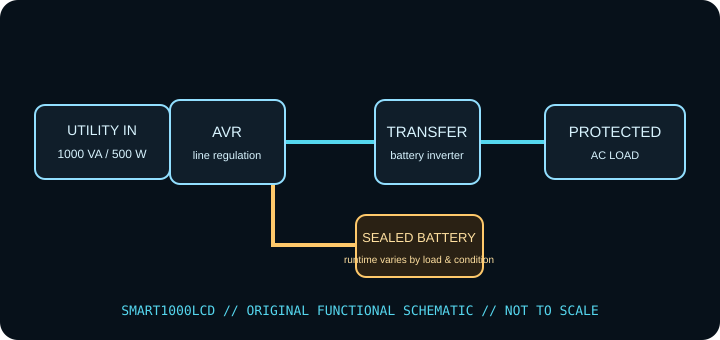

[ LINE-INTERACTIVE UPS // IDENTIFIED MODEL ]
Tripp Lite SMART1000LCD
Eaton / Tripp Lite line-interactive AVR UPS, rated 1000 VA / 500 W. This record describes the identified regional model only. Check the complete nameplate, hardware revision and matching manufacturer documentation before installation or load selection.

ARCHIVAL IDENTIFICATION: Record complete SKU/suffix, input/output labels, serial/date code, hardware revision, battery type/age, accessories, test conditions and manual revision. Similar model names do not establish electrical equivalence.
Exact model specifications
| Manufacturer / exact model | Eaton / Tripp Lite SMART1000LCD (North American model record; verify complete SKU, revision and serial/date label). |
|---|---|
| Topology | Line-interactive UPS with automatic voltage regulation (AVR); supported input fluctuations may be corrected without battery transfer. This is not a standby-only or online double-conversion unit. |
| Capacity / input | 1000 VA / 500 W; 120 V AC nominal, North American NEMA 5-15P model. Match input range and region on the UPS label. VA and W are separate limits; stay under both. |
| AC output / waveform | 120 V AC nominal; simulated-sine (PWM sine-wave) battery output and automatic voltage regulation as described in the model documentation. |
| Outlets / load assignment | Eight NEMA 5-15R: four battery-backup + surge-protected and four surge-only. Consult the outlet diagram on the exact unit. |
| Battery chemistry / service | Internal maintenance-free sealed lead-acid battery; replacement is user-serviceable only using the stated model procedure and approved replacement type. |
| Runtime / test conditions | Manufacturer reference curve gives about 10 minutes at 50% load (250 W) and about 3 minutes at full load (500 W). Treat as typical curve readings; a real battery/load can differ substantially. Runtime tests should record connected watts, charge state, battery age/health, temperature and test date. |
| Host signaling / software | USB and RS-232 communications with PowerAlert management software; check Eaton/Tripp Lite host support for the current software and host OS. |
| Load compatibility | 120 V equipment within both rating limits and compatible with the specified battery-mode waveform. Not a source for high-inrush heaters, laser printers or motors unless the manufacturer explicitly approves them. |
Safety, service & limits
- Use only with the grounded voltage/frequency and environment allowed by the complete unit label and current model manual. Never defeat grounding or daisy-chain UPS outputs.
- Do not connect heaters, laser printers, motors or other high-inrush loads unless the manufacturer expressly permits them and their steady-state and startup demand remain within the UPS limits.
- Do not open an energized UPS or work on battery terminals. Sealed lead-acid batteries can deliver destructive fault current; avoid short circuits, damaged/swollen/leaking cells and unapproved replacements. Follow the manufacturer isolation, service and recycling directions.
- Remove damaged equipment from service if the case, cord, plug, grounding, outlet, battery or indicator shows heat, swelling, leakage, cracking, odor, corrosion or other fault. Follow the maker’s safe shutdown guidance.
- Keep ventilation clear, protect the unit from liquid and excessive heat, and test host shutdown and runtime under a controlled load. Battery backup is finite and is not a substitute for code-compliant wiring or an independent data backup.
Manufacturer sources and documentation
- Eaton / Tripp Lite — SMART1000LCD product specificationsManufacturer information for the named model; confirm revision and regional suffix on the actual unit.
- Eaton / Tripp Lite — SMART1000LCD support and downloadsManufacturer information for the named model; confirm revision and regional suffix on the actual unit.
- Eaton / Tripp Lite — SMART LCD UPS owner manualManufacturer information for the named model; confirm revision and regional suffix on the actual unit.